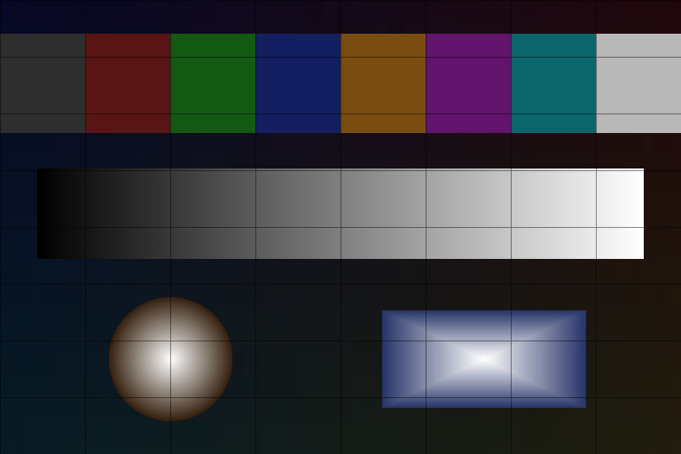

Synthetic Ultra HDR comparison
This page uses one synthetic ISO 21496-1 gain-map JPEG in two direct <img> elements. It contains no Ticket or user pixels. A screenshot cannot prove EDR luminance, and this page cannot move the device brightness slider.

dynamic-range-limit: standarddynamic-range-limit: no-limitRuntime diagnostics
- Status
- Measuring image decode…